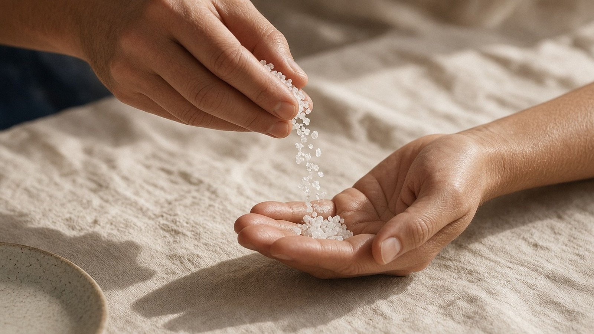
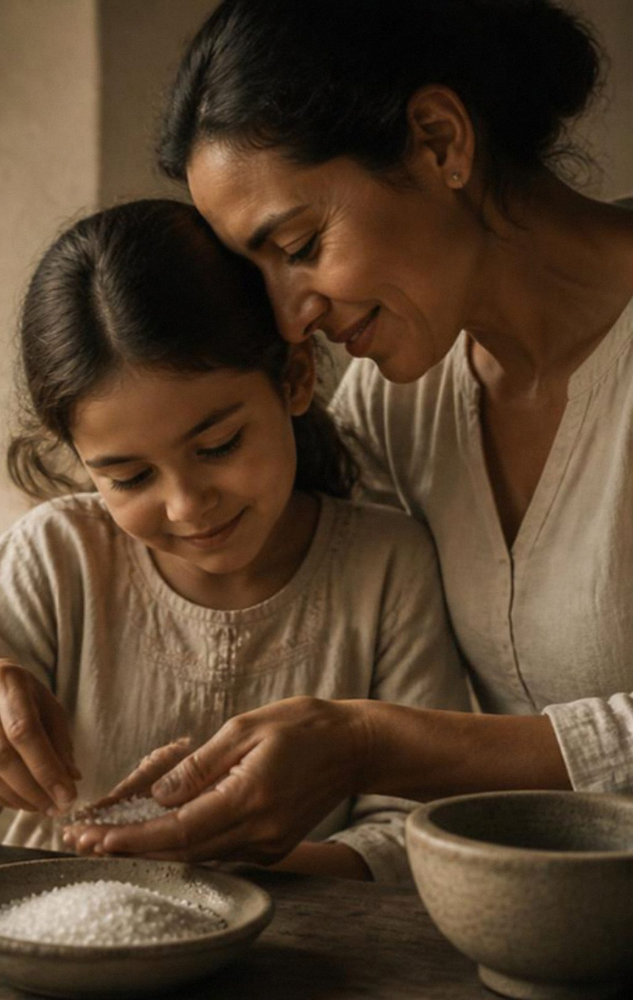
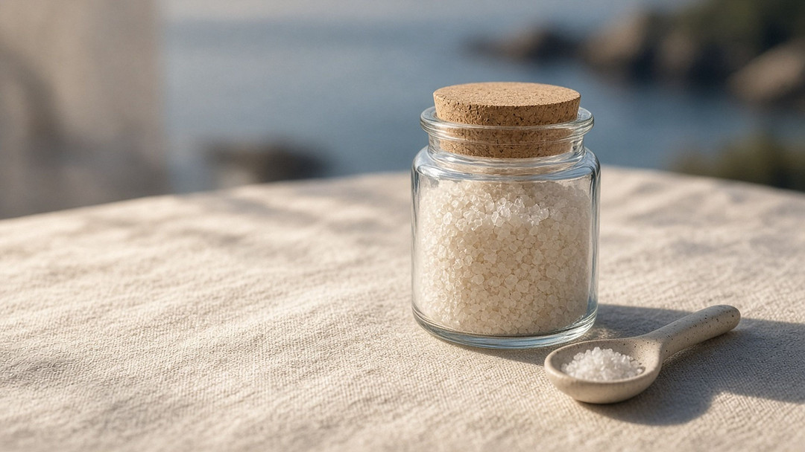
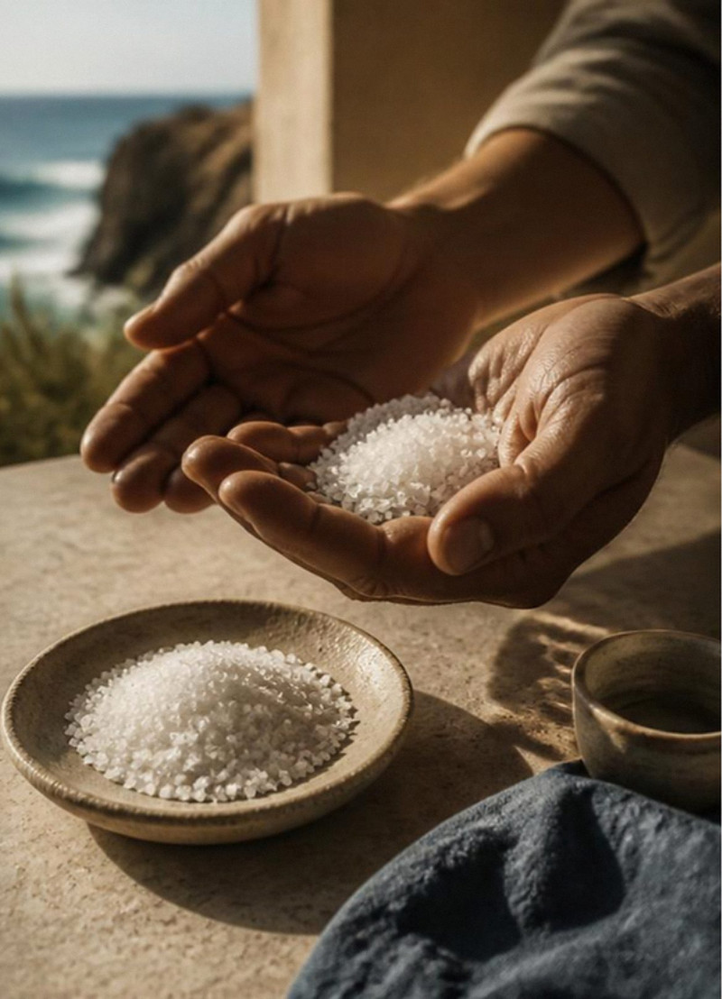

Sal de mar de México
¿Y si miras
de nuevo?
Sal de mar de México en frasco numerado. El lote fundador es de solo 100 frascos. Apúntate y te avisamos primero.
Apuntarte es gratis y no te obliga a comprar.
La historia
Empezó con una pregunta en la mesa.
Un niño prueba su comida y pide la sal. Su mamá la deja sobre la mesa, como siempre.
—¿Por qué siempre haces eso, mamá?
—Porque es de mala suerte pasar la sal directamente en la mano.
—¿Pero por qué?
—Porque así me enseñaron.
El niño pensó un momento. «Tú cocinas con amor, y a mí me encanta tu comida. Si te doy la sal en la mano… ¿nos hacemos daño?»
La mamá guardó silencio. Lo miró. Y sonrió.
—Quizá nunca nos detuvimos a preguntarnos si es cierto.
Por eso, cuando alguien te dice «pásala», no le pasas solo la sal. Le pasas un momento. Y puedes mirar con cariño por qué haces lo que haces.


El gesto
Pasar
la sal.
Cuando pasas la sal también pasas cosas que no se ven: costumbres, cariño, prisa, miedo. La sal viene del mar de México y llega a tu mesa. La ves todos los días, tanto que casi ya no la ves.
Cuando pases la sal, pregúntate: ¿qué estoy compartiendo hoy?
No hace falta irte de viaje ni meditar: basta un segundo en la mesa.

Lote fundador
Cien frascos. Cien números. Cien mesas.
El lote fundador es pequeño a propósito: solo 100 frascos de sal de mar de México. Cada frasco lleva su propio número, del 001 al 100.
- Qué es
- Sal de mar de México en frasco de vidrio numerado.
- Qué recibes
- Cuando se abra la venta, quien compre recibe su frasco con su número fijo y un certificado digital (PDF) de ese número.
- Precio
- Te lo avisamos primero a quienes estén en la lista.
- Cuándo
- Todavía no hay fecha. Te la damos por correo cuando esté confirmada.
Apuntarte a la lista es gratis y no te obliga a comprar. Te avisamos antes de que se abra la venta.
El lote fundador no da regalías ni parte de las ventas.
Quién está detrás
Soy Adrián.
Soy Adrián Sahagún, fundador de PÁSALA, una marca mexicana de sal de mar con base en Guadalajara, Jalisco.
Estoy preparando el lote fundador de 100 frascos.

Lista de espera
Apúntate y te avisamos primero.
Escribe tu correo y te avisamos antes que a nadie cuando se abra la venta de los 100 frascos. Apuntarte es gratis y no te obliga a comprar.
Listo. Te avisaremos por correo cuando se abra el lote.